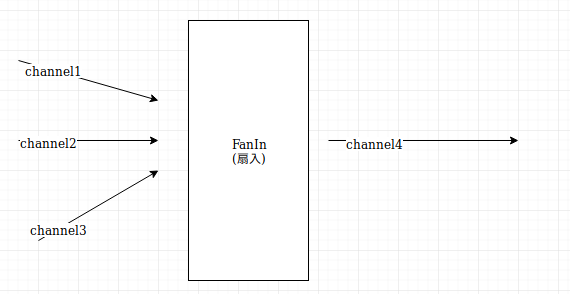
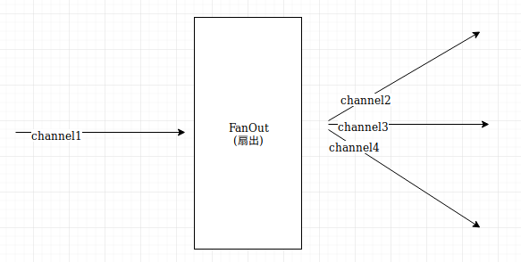
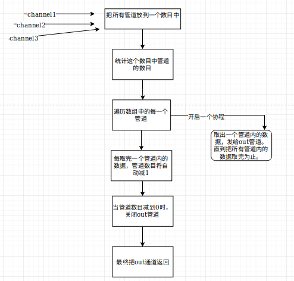

在学习并发时，对Fanin和Fanout这两个范式印象深刻，特此记录一下学习心得。
介绍
扇出（Fan-out）是一个术语，用于描述启动多个goroutines以处理来自管道的输入的过程，并且扇入（fan-in）是描述将多个结果组合到一个通道中的过程的术语。
画个图


这样做有什么好处呢，下面来看看源码。
源码学习
在concurrent_map.go文件中
1 | // Iter returns an iterator which could be used in a for range loop. |
画图演示下过程

解释
sync.WaitGroup
sync.WaitGroup只有3个方法，Add()，Done()，Wait()。其中Done()是Add(-1)的别名。简单的来说，使用Add()添加计数，Done()减掉一个计数，计数不为0, 阻塞Wait()的运行。
因此当计数为0时，也就是要进入的管道数都没有的时候，关闭管道。
FanIn范式的用途
在此引用我看到的一段话
管道的一个有趣属性是它的各个阶段相互独立，方便组合。你可以多次重复使用管道的各个阶段。因此，在多个goroutine上重用管道的单个阶段实现并行化，将有助于提高管道的性能。
事实上，这种模式被称为扇入扇出。
那么在什么情况下适用于这种模式呢？如果出现以下两种情况，你就可以考虑这么干了：
不依赖模块之前的计算结果。
运行需要很长时间。